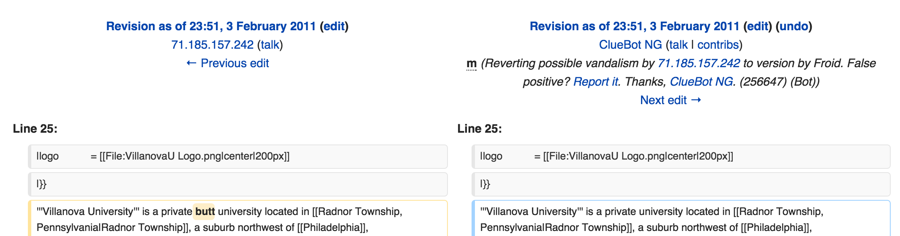

Welcome!
to an investigation of Git (and Github)

Clarification
Git ≠ Github
Why would I need this?
- Jobs
- Collaborating
- Open Source
- CSC 4700
So what's Git
Git is a Version Control System (VCS)
Whats a VCS
A piece of software that allows you to track changes in software as you (and possibly others) work on a project
It's written by this fellow

An Example by Field Trip

Explore this click on 'prev' for a vandalism link
Classic.
Install Git
Windows: open git bash
OSX: open Terminal app

Useful terminal commands
# Change Directory
cd
# Print Working Directory
pwd
# Make Directory
mkdir
# List directory contents
ls
# Remove where filename is the actual file name
rm filename
The tab key will usually spped things up with autocomplete
Signup for a Github account

Create a New Repo on Github
Go to github and click the new button
Scenario: You want to start a repo on github to track your work.
git init
git add .
git commit -m "My first commit"
git remote add origin http://github.com/dsiah/example-repo.git
git push -u origin master
Cloning a repo
Scenario: You have a repo on github but want to get it on your computer.
git clone http://github.com/dsiah/example-repo.git
Getting code from github
Scenario: You're working with a partner on a project simultaneously, both already cloned the repo and have work to push.
git stash
git pull
git stash apply
Send it to the cloud!
Scenario: You have updated work on your computer and want to put it on github.
git status
git add .
git commit -m "all my local work is getting committed"
git push